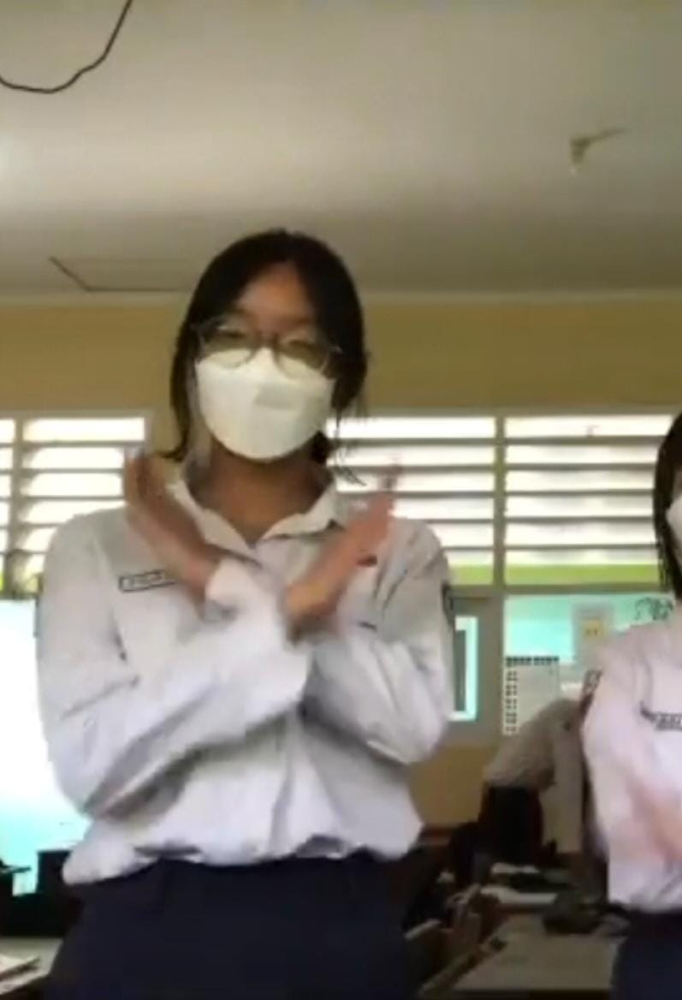
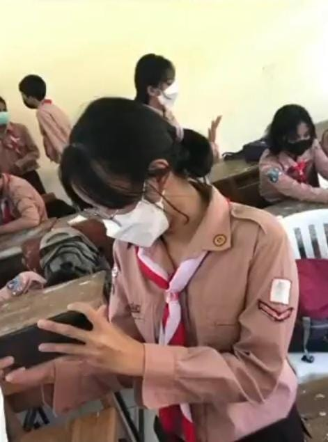
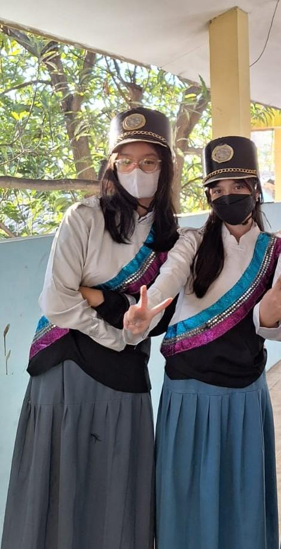
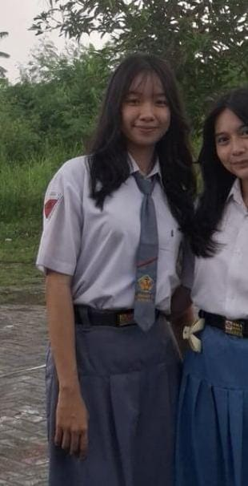
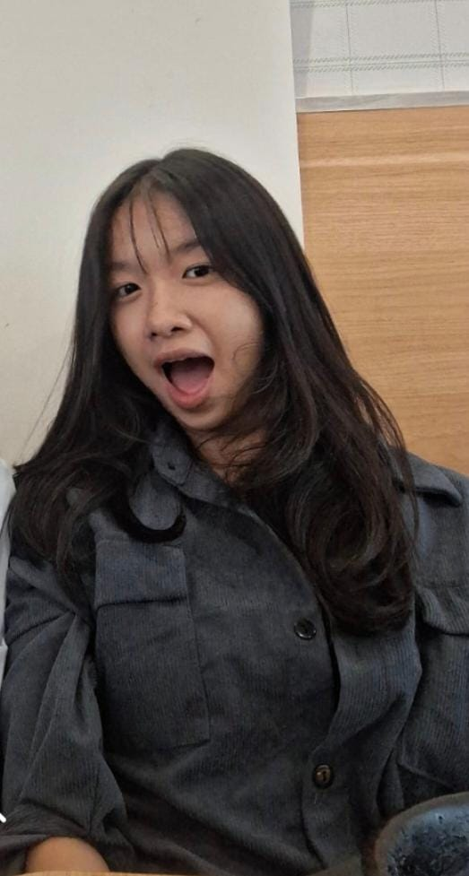
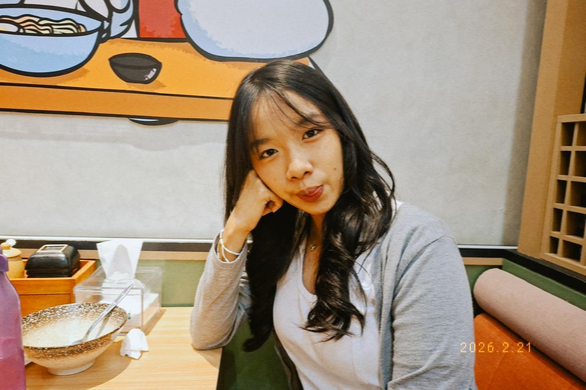
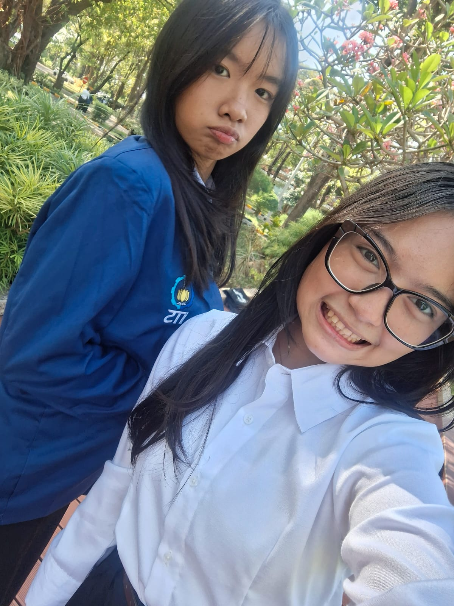
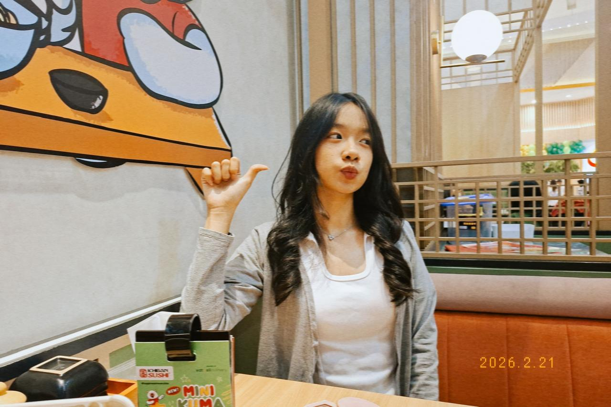

Happy Birthday, Jesslyn!
Our Journey ✨
── Fase SMP ──

Noh kann wibu banget vibes e je wkwk 😂
Anime favorite apa mbak??🤣🤣

nah iki pas Nonton anime apa je🤣🤣
── Fase SMA ──

Uanjay sekre marching ter✨

Tambah tinggi yee..bawahku seh tapi sek an 🤣

Ini lucu sih
── Fase Kuliah ──

ANJAYY GLOW UP😱

ANJAYY ANAK ITS😎.. sampek sini tau kan berarti foto semua ini dari siapa wkwkw😂😂

wes dadi Wonderwoman saiki👑
AYO DOAA SEK BRU DITIUP🎂
Ketuk lilinnya...
Hai hehehe... ga kerasa ya udah nambah umur lagi aja lu. cie tambah tua wkwkwk🤣🤣🤣... ga ga gaa dohhh sek 19 kan tch masih mudah banget itu dont panic brook.. foto-foto itu diatas itu secara ga lansung ngingetin kamu kalau sekarang kamu sudah dewasa jee dah bukan anak kecikkk,so kamu harus bersyukur yaa masih diberi kesempatan ma tuhan sampek di bisa di titik ini😊... wkwk gmna?? perasaannya sekarang?? hepi ga dapet kado dari gue wkwk....INGETTT BUKAK WEB INI DLU BARU BUKAK KADONYA LO YAA AWAS AJA KALO KAMU BACA INI DALAM KEADAAN SUDAH DIBUKAK KADONYA...Semoga 2 kado yang ku kasih ini (kado fisik yang nanti kamu buka dan website ini) bisa menjadi salah satu kado yang berkesan buat kamu ya... dan alasan aku se effort ini adalah mungkin ak ngerasa dulu ak gabisa ngasih experience yang berkesan dan membekas aja ke kamu,effortku kurang lah dalam segala hal...so maybe semoga ini bisa nutupin salah satunya yaa,ya meskipun telat gapapa laya wkwk... Aku mo cerita dkit nieh waktu ak kenal kamu pertama kali emang jujur vibes nya kek wibu akut seh je wkwk cuman ya ternyata plot twist e ga nonton anime ternyata 😂.... ya gtu deh pembukaan awal dari website ini kamu masih harus lanjut ke step berikutnya okey dibawah itu udah ikutin ajee...maaf kalo semisal kado yang ku kasih ini masih belum seberapa ya mungkin diluar sana ada yang ngado kamu lebih berkesan dari kadoku ini cuman ya i hope you sukak yaa😊... kamu harus berterimakasih juga lo sama beberapa disini: 1. Jeni... karena ak mintak foto-foto mu itu dari dia wkwk karena jujur foto pap-pap mu dlu udh kuhapus karena ak merasa ga sopan aja kalau ak simpen 2. Kopi 3 gelasku dan biskuit roma wkwk... why??? karna mereka lah aku bisa terjaga dari abis teraweh sampek sahur selama 4 hari berturut, dari jumat sampek sekarang aku ngetik teks ini sudah hari senin tanggal 9-maret-2026 jam 04.25 shubuhh 😂😂 buat bikin website ini....kalo kamu liat ya buat bikin website gni ada ratusan line code yang ak buat di balik layarnya wkwk html nya aja ada 264😱,css 598 line🤣🤣,javascriptnya hampir 300 berapa tuhhh?? hitung sendiri deh anak ITS kan wkwk....yauda mungkin itu aja pembukaannya okeh lanjut scroll jeee
Cobak gosok je.. santai bukan nomer togel kok😊